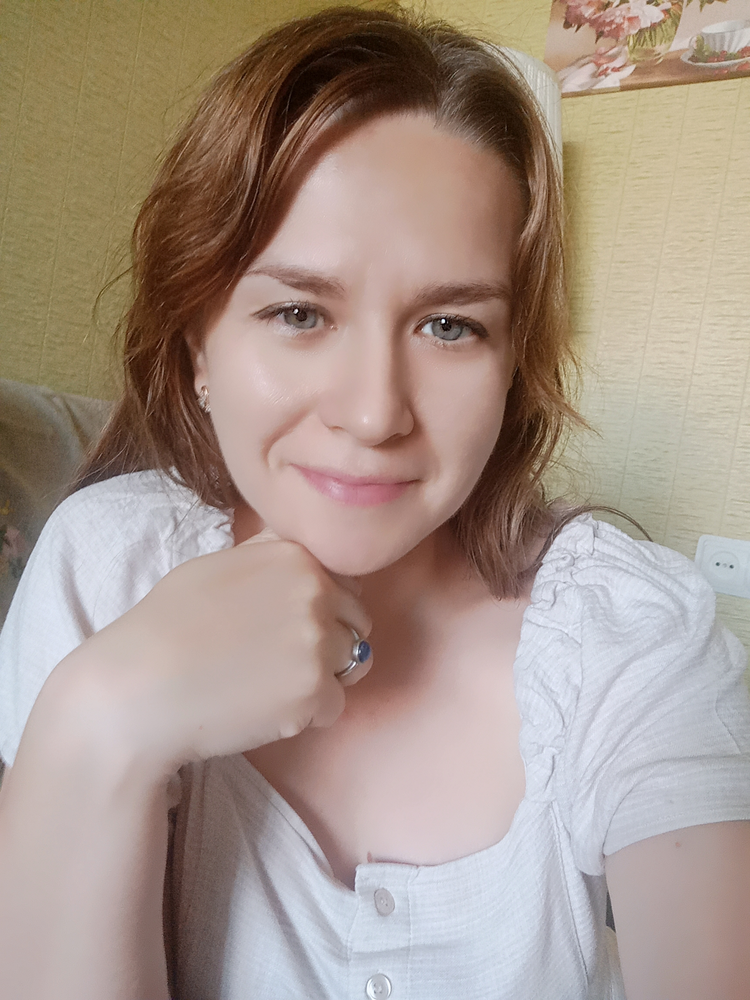

ОБУЧЕНИЕ АНГЛИЙСКОМУ ЯЗЫКУ
Здравствуйте,. меня зовут Наталия.
Английский язык я начала изучать и полюбила в институте. Во время обучения я успешно прошла собеседование с американскими представителями в Москве и приняла участие в международной программе по обмену студентами (CCUSA, YMCA) и потом ездила в Америку на стажировку в течение 3 лет. С тех пор английский постоянно присутствует в моей жизни (помогаю студентам в институте, школьникам, общаюсь с иностранцами). Также помогла полюбить и освоить английский язык дочерям, старшая успешно сдала экзамен и получила кембриджский сертификат уровня С1.
Попробовав преподавать в лингвистическом центре,где я проработала в течение 2 лет (2018-2019, 2019-2020 учебные года), я перешла на индивидуальные занятия и занимаюсь ими по настоящее время. Опыт проживания в других странах - 5 лет в Германии, 5 лет в Литве, в США -трижды до 5 месяцев.
Обучаю английскому языку детей и взрослых по коммуникативной методике. На занятиях отрабатываю все аспекты английского языка – чтение, письмо, говорение, восприятие речи на слух, произношение. Применяю разнообразные интерактивные задания, игровые формы с детьми.
Занятия провожу оффлайн и онлайн в программе Zoom.
Впереди будет много трудностей, многое будет казаться непонятным и порой даже не потдающемся для понимания и изучения, но не стоит этого бояться! Я буду вашим надёжным проводником в этом поистине завораживающем путешествии в мир английского языка.